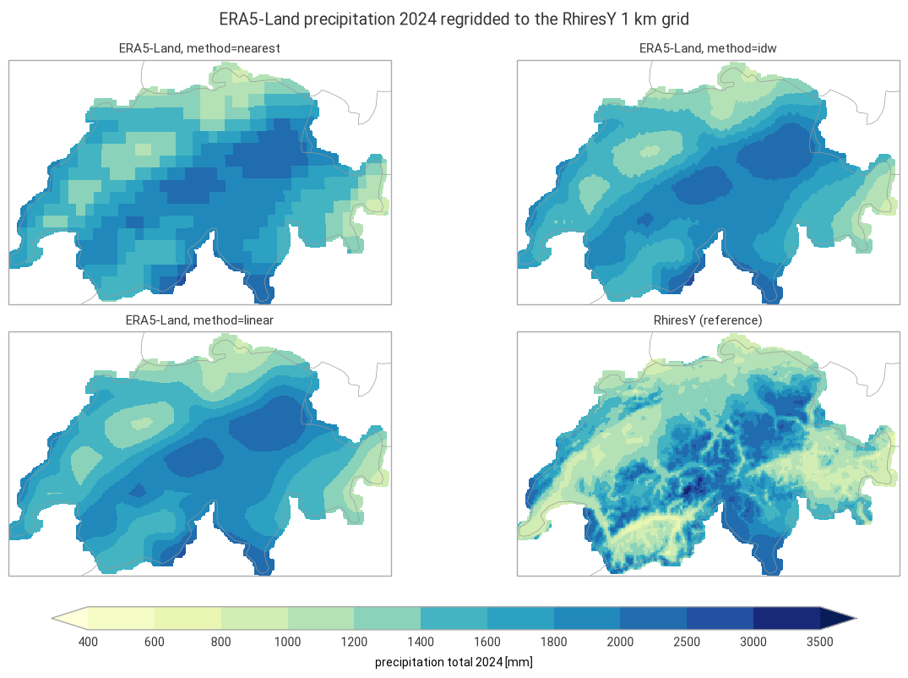

Regridding: ERA5-Land yearly precipitation on the RhiresY grid#
This example illustrates interp2grid() with three methods:
nearest: value of the nearest source grid point;idw: inverse distance weighting of theknearest grid points, with weightsd^(-weight_power);linear: bilinear interpolation, since the source grid is regular.
The 2024 precipitation total of the ERA5-Land reanalysis (regular 0.1° grid, about 9 km) is regridded to the 1 km grid of RhiresY, the MeteoSwiss yearly precipitation analysis based on rain gauges, in the Swiss LV95 coordinate system. RhiresY 2024 is shown alongside as a reference.
Running this notebook needs a free account on the
Copernicus Climate Data Store: your API token in ~/.cdsapirc
and the licence of the ERA5-Land dataset accepted once on its download page.
Data: contains modified Copernicus Climate Change Service information 2026, ERA5-Land monthly averaged data (DOI: 10.24381/cds.68d2bb30), CC BY 4.0. MeteoSwiss open data, CC BY 4.0, source: MeteoSwiss. Country borders: Natural Earth.
import time
import timeit
from collections.abc import Callable
from functools import partial
from typing import Any
# import pyproj before earthkit.data to avoid a crash at exit (earthkit-data#1202)
import pyproj # noqa: F401 # pylint: disable=unused-import
import cartopy.crs as ccrs
import earthkit.data as ekd
import earthkit.plots as ekp
import geopandas as gpd
import numpy as np
import pandas as pd
import xarray as xr
import grid_process.grid_interp as gri
import grid_process.units_conv as uconv
from grid_process import data_model as dm
METHODS: dict[str, dict[str, Any]] = {
"nearest": {"method": "nearest"},
"idw": {"method": "idw", "k": 4, "weight_power": 2},
"linear": {"method": "linear"},
}
YEAR = 2024
Destination grid and reference#
The RhiresY file is a CF-compliant NetCDF file: grid_process finds the E/N coordinates from their
standard_name and the LV95 projection from the grid mapping variable, so the dataset can be used as
the destination grid as is. RhiresY has no value outside its analysis domain (Switzerland and some
border areas).
RHIRES_URL = (
"https://data.geo.admin.ch/ch.meteoschweiz.ogd-surface-derived-grid/archive-ch/"
"ogd-surface-derived-grid-archive.rhiresy_ch01r.swiss.lv95_20240101000000_20240101000000.nc"
)
# time units "years since ..." cannot be decoded by xarray and are not needed here
dst_grid = ekd.from_source("url", RHIRES_URL).to_xarray(decode_times=False).squeeze("time", drop=True)
rhires = dst_grid["RhiresY"]
dst_grid
<xarray.Dataset> Size: 1MB
Dimensions: (N: 240, E: 370)
Coordinates:
* N (N) float64 2kB 1.064e+06 1.066e+06 ... 1.304e+06
* E (E) float64 3kB 2.474e+06 2.476e+06 ... 2.844e+06
lon (N, E) float32 355kB ...
lat (N, E) float32 355kB ...
Data variables:
RhiresY (N, E) float32 355kB ...
swiss_lv95_coordinates float64 8B ...
Attributes:
Conventions: CF-1.8
institution: Data produced at Federal Office of Meteorology and Climatol...
References: Information on the data is available at\nhttps://www.meteos...
title: Spatial Climate Analyses Dataset of MeteoSwiss (RhiresY)
history: 2025-01-24 18:12:45 - generated by gridmch 7.31.0Source data#
ERA5-Land monthly means are retrieved from the Climate Data Store for a box around Switzerland with a
wide margin (area = North, West, South, East). Monthly means of accumulated variables are daily
totals in metres, so the yearly total is the sum over the months of the daily total times the number
of days in the month.
request = {
"product_type": ["monthly_averaged_reanalysis"],
"variable": ["total_precipitation"],
"year": [str(YEAR)],
"month": [f"{month:02d}" for month in range(1, 13)],
"time": ["00:00"],
"area": [49.0, 4.5, 44.5, 12.0],
"data_format": "netcdf",
"download_format": "unarchived",
}
era5 = ekd.from_source("cds", "reanalysis-era5-land-monthly-means", request).to_xarray()
tp = era5["tp"]
days = tp["valid_time"].dt.days_in_month
total = (tp * days).sum("valid_time", skipna=False).assign_attrs(units="m") # daily totals [m] × days
ds = uconv.ds_to(total.reset_coords(drop=True).to_dataset(name="precipitation"), "mm")
ds["precipitation"].attrs["long_name"] = f"precipitation total {YEAR}"
ds
<xarray.Dataset> Size: 29kB
Dimensions: (latitude: 46, longitude: 76)
Coordinates:
* latitude (latitude) float64 368B 49.0 48.9 48.8 ... 44.7 44.6 44.5
* longitude (longitude) float64 608B 4.5 4.6 4.7 4.8 ... 11.8 11.9 12.0
Data variables:
precipitation (latitude, longitude) float64 28kB 983.7 991.6 ... 832.0Interpolation#
Each method is called once, and the duration of this first call is kept for the benchmark below. The
outputs are masked outside the RhiresY analysis domain. On a regular grid with 1D coordinates, nearest and linear use xarray’s interpolation by default (try_reg=True), which is efficient for large grids but may be slower for small grids with many other dimensions. They are also run through the generic path (try_reg=False) for comparison.
def with_try_reg(methods: dict[str, dict[str, Any]], data: xr.Dataset) -> dict[str, dict[str, Any]]:
"""On a grid with 1D spatial coordinates, 'nearest' and 'linear' use xarray's interpolation by default
(try_reg=True): add the generic path (try_reg=False) to compare both."""
regular = len(dm.get_spatial_dims(data)) == 2
expanded: dict[str, dict[str, Any]] = {}
for method, kw in methods.items():
if regular and kw["method"] in ("nearest", "linear"):
expanded[method] = kw | {"try_reg": True}
expanded[f"{method} (try_reg=False)"] = kw | {"try_reg": False}
else:
expanded[method] = kw
return expanded
runs = with_try_reg(METHODS, ds)
results: dict[str, xr.DataArray] = {}
first_call: dict[str, float] = {}
for label, kwargs in runs.items():
t0 = time.perf_counter()
out = gri.interp2grid(ds, dst_grid, **kwargs)
first_call[label] = time.perf_counter() - t0
results[label] = out["precipitation"].where(rhires.notnull())
for label in METHODS:
if f"{label} (try_reg=False)" in results:
diff = abs(results[label] - results[f"{label} (try_reg=False)"])
print(
f"{label}, try_reg=True vs. False: mean abs. difference {diff.mean().item():.3g} mm,"
f" max. {diff.max().item():.3g} mm"
)
results["linear"]
nearest, try_reg=True vs. False: mean abs. difference 0 mm, max. 0 mm
linear, try_reg=True vs. False: mean abs. difference 2.5 mm, max. 47.5 mm
<xarray.DataArray 'precipitation' (N: 240, E: 370)> Size: 710kB
array([[nan, nan, nan, ..., nan, nan, nan],
[nan, nan, nan, ..., nan, nan, nan],
[nan, nan, nan, ..., nan, nan, nan],
...,
[nan, nan, nan, ..., nan, nan, nan],
[nan, nan, nan, ..., nan, nan, nan],
[nan, nan, nan, ..., nan, nan, nan]], shape=(240, 370))
Coordinates:
* N (N) float64 2kB 1.064e+06 1.066e+06 ... 1.302e+06 1.304e+06
* E (E) float64 3kB 2.474e+06 2.476e+06 ... 2.842e+06 2.844e+06
lon (N, E) float32 355kB 5.827 5.84 5.853 5.865 ... 10.67 10.68 10.69
lat (N, E) float32 355kB 45.72 45.72 45.72 45.72 ... 47.84 47.84 47.84
Attributes: (12/30)
GRIB_paramId: 228
GRIB_dataType: fc
GRIB_numberOfPoints: 3496
GRIB_typeOfLevel: surface
GRIB_stepUnits: 1
GRIB_gridType: regular_ll
... ...
GRIB_shortName: tp
GRIB_totalNumber: 0
GRIB_units: m
units: mm
GRIB_surface: 0.0
long_name: precipitation total 2024Visual comparison#
lv95 = ccrs.epsg(2056)
style = ekp.styles.Style(
levels=[400, 600, 800, 1000, 1200, 1400, 1600, 1800, 2000, 2500, 3000, 3500],
colors="YlGnBu",
extend="both",
units="mm",
)
panels = {f"ERA5-Land, method={label}": results[label] for label in METHODS} | {"RhiresY (reference)": rhires}
fig = ekp.Figure(rows=2, columns=2, figsize=(12, 7.5), crs=lv95)
for i, (title, field) in enumerate(panels.items()):
subplot = fig.add_map(i // 2, i % 2)
subplot.pcolormesh(field.values, x=field.E.values, y=field.N.values, style=style, transform=lv95)
subplot.title(title)
fig.borders()
fig.legend(label=f"precipitation total {YEAR} [mm]")
fig.title(f"ERA5-Land precipitation {YEAR} regridded to the RhiresY 1 km grid")
fig.show()

Performance benchmark#
The first call includes building the neighbour search structures and reprojecting the coordinates,
which grid_process caches. Subsequent calls on the same grids (e.g. for other variables or years)
reuse them: their runtime is the mean ± standard deviation over 5 repetitions.
def benchmark(
func: Callable[..., xr.Dataset],
data: xr.Dataset,
target: gpd.GeoDataFrame | xr.Dataset,
methods: dict[str, dict[str, Any]],
first_call_times: dict[str, float],
repeat: int = 5,
) -> pd.DataFrame:
"""Runtime of the first call and mean ± standard deviation of the subsequent calls of each method."""
rows: dict[str, dict[str, Any]] = {}
for method, kw in methods.items():
times = np.array(timeit.repeat(partial(func, data, target, **kw), number=1, repeat=repeat))
rows[method] = {
"first call [s]": f"{first_call_times[method]:.3f}",
"subsequent calls [s]": f"{times.mean():.3f} ± {times.std():.3f}",
}
return pd.DataFrame.from_dict(rows, orient="index").rename_axis("method")
print(f"{ds.latitude.size} × {ds.longitude.size} source grid points -> {dst_grid.N.size} × {dst_grid.E.size} cells")
benchmark(gri.interp2grid, ds, dst_grid, runs, first_call)
46 × 76 source grid points -> 240 × 370 cells
| first call [s] | subsequent calls [s] | |
|---|---|---|
| method | ||
| nearest | 0.060 | 0.028 ± 0.001 |
| nearest (try_reg=False) | 0.021 | 0.010 ± 0.000 |
| idw | 0.035 | 0.017 ± 0.000 |
| linear | 0.027 | 0.026 ± 0.001 |
| linear (try_reg=False) | 0.027 | 0.025 ± 0.000 |
Takeaways#
nearestshows the 9 km ERA5-Land grid boxes on the 1 km grid.idwandlineargive smooth fields that are nearly identical here: withk=4andweight_power=2,idwweights the corners of the source grid box much like bilinear interpolation.No method can add detail that the source grid does not resolve: compared with RhiresY, the regridded fields miss the dry inner-alpine valleys (Valais, Engadine) and the wettest crests, and ERA5-Land is wetter than RhiresY over most of the Plateau.
On the regular ERA5-Land grid,
nearestgives the same values with the regular path (try_reg=True, xarray’s interpolation) and with the generic path (try_reg=False).lineardiffers by a few mm on average and up to about 50 mm, since the regular path is bilinear and the generic path interpolates on a triangulation of the source grid points.For a single small field like this one, every method takes a few hundredths of a second, and the generic path of
nearestis faster than the regular one.